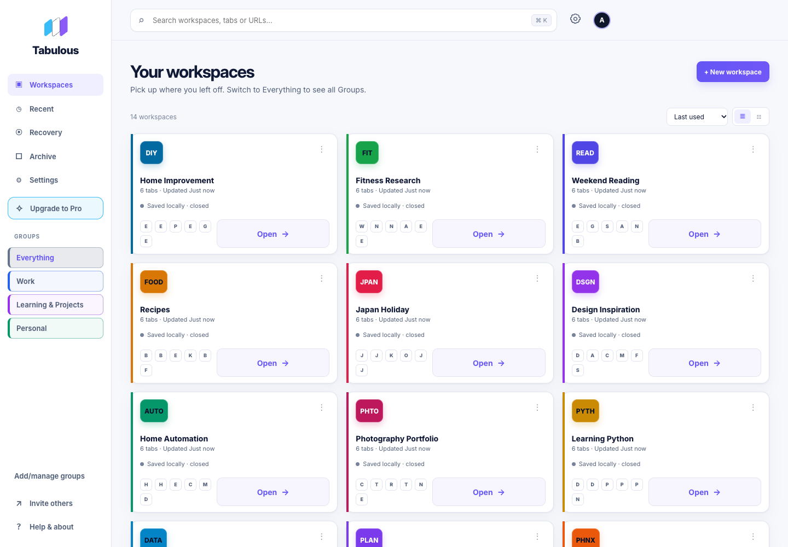
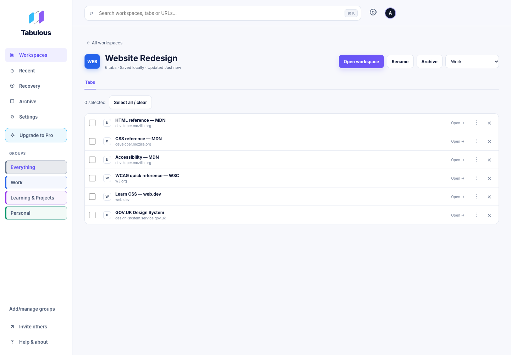

Everything in its place
Create Workspaces for your projects, interests and everyday browsing. Organise tabs into Groups, add colour and make finding what you need effortless.
YOUR BROWSER. ROOM TO BREATHE.
Organise tabs into persistent Workspaces and Groups. Keep everything local for free, or sync your library across computers and Chrome profiles with Pro.
Version 2.0.1 has been submitted for Chrome Web Store review. The listing shows the version currently available to install.

A PLACE FOR EVERYTHING
Stop hunting through endless tabs and minimised windows. Keep each project organised, ready to reopen whenever you need it.
Create Workspaces for your projects, interests and everyday browsing. Organise tabs into Groups, add colour and make finding what you need effortless.
Save the tabs you need and close the windows you don't. Less clutter on your desktop, fewer tabs competing for system resources, and everything ready when you return.
Reopen saved Workspaces, recover recent local sessions, and export a portable .tab backup. Import your backup when you need it.
Declutter the Dock. Tidy the Taskbar. Feel Tabulous.

START LOCAL. GO FURTHER.
Tabulous lets you save and organise your tabs right on your computer. Unlimited Workspaces, completely free, forever. No account, no subscription, no fuss.
Want your saved Workspaces across devices and Chrome profiles? Tabulous Pro automatically syncs your saved library across computers and Chrome profiles after you connect each device. Keep working offline; changes sync when you reconnect, with review when changes need your decision.
Explore Pro plans →FROM INSTALL TO ORGANISED
A FRESH START FOR YOUR BROWSER
All your tabs, beautifully organised. A calmer browser is just a click away.
View on Chrome Web Store ↗